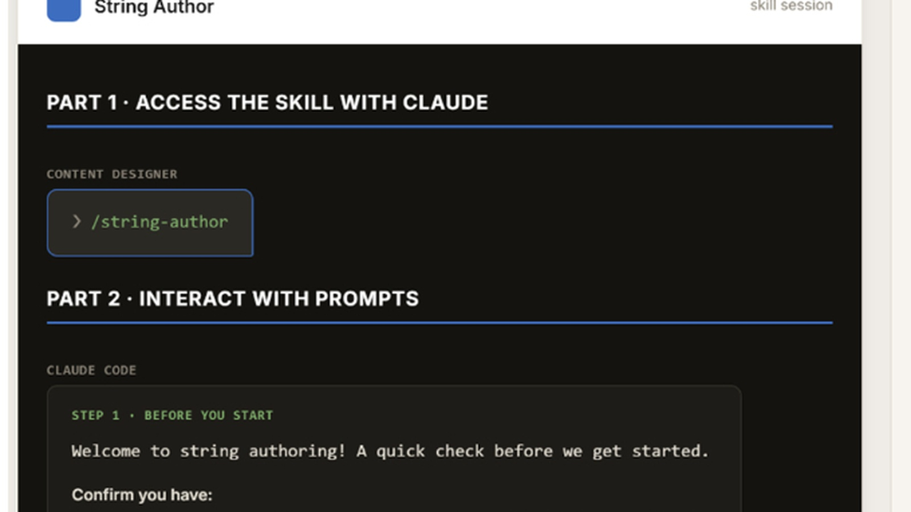

Read the full case studyOptimizing content-to-code with AI
Content Design handed finalized strings to Engineering for manual implementation. I designed and piloted a human-in-the-loop workflow that let content designers add strings directly to code while Engineering retained technical review, cutting implementation time 91% with zero post-launch corrections.